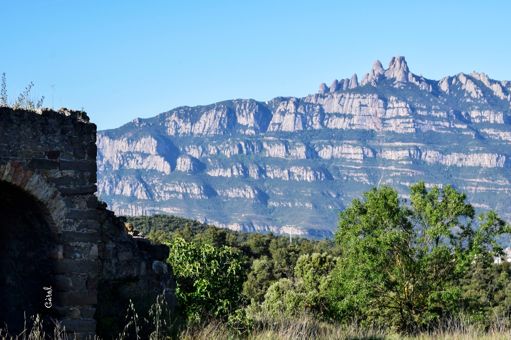
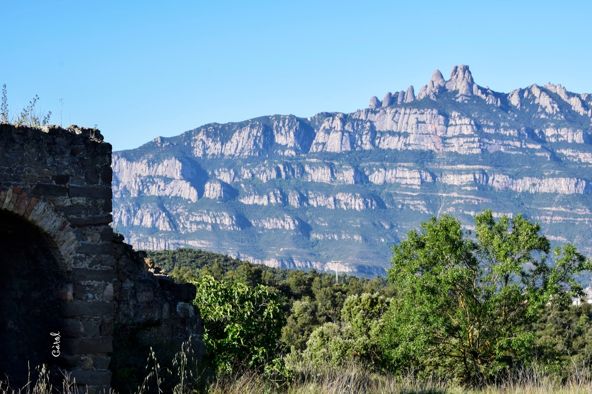
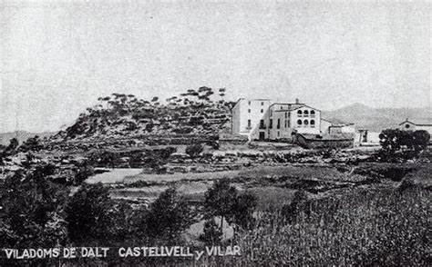
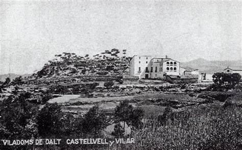
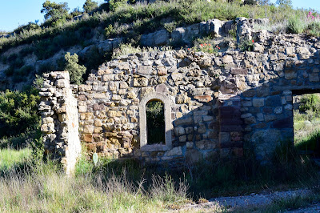
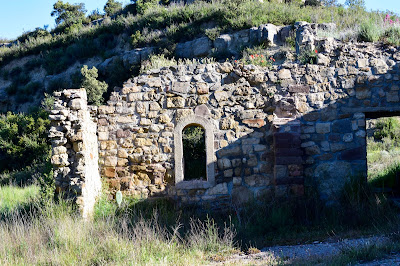

Historia Viladoms de dalt - Castellbell i el Vilar
Viladoms de dalt i Nostra Senyora de Montserrat
Masia de Viladoms de dalt (Castellbell i el Vilar) és un edifici amb orígens medievals, que remonten al s. XIV. Habitat en diferents moments de la història i reconvertit, en cada moment, per donar servei als seus variats habitants.
Forma part d'aquest grup de construccions amb molta història, vida i servei a sobre, però a sobre amb les injustes pedres de la mala sort de la mà. Ha patit diferents espolis, especialment els darrers anys, i la situació de desprotecció del mas, per part dels diferents estaments de govern fa, si més no, potenciar aquesta realitat sense fi.
 

 

 
